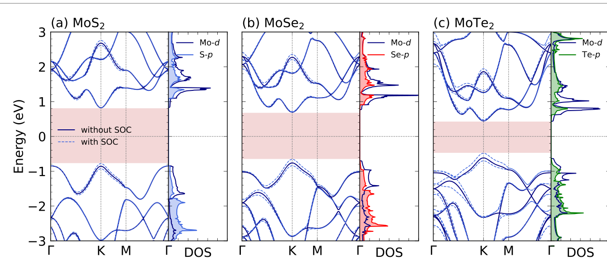
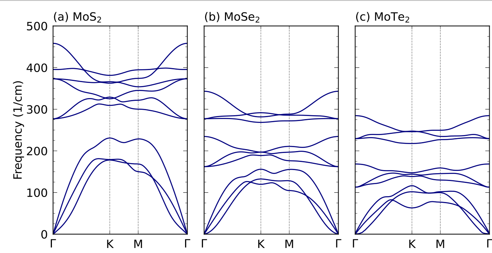
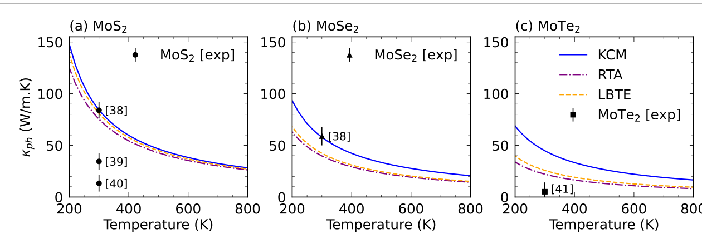
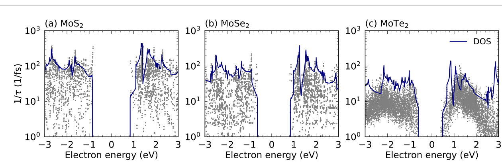
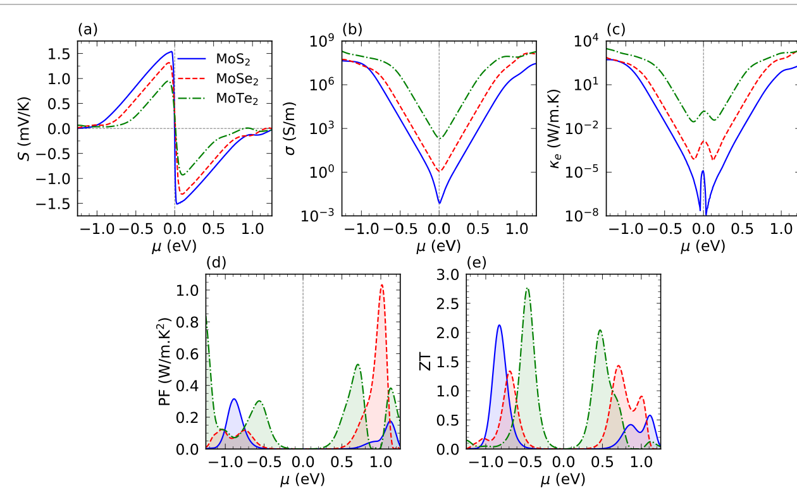
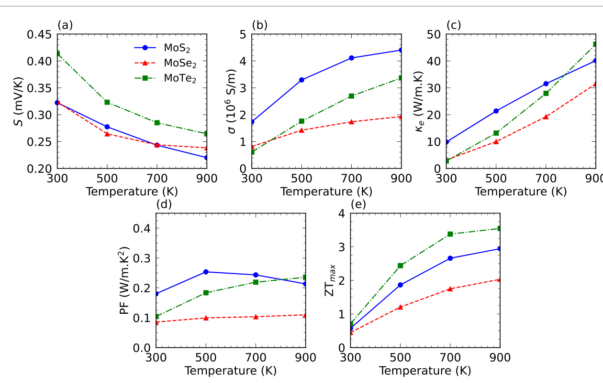

Ringkasan Eksekutif untuk Peneliti (4 Poin Inti)
1. Keterbatasan Grafena & Potensi TMDC 2D: Grafena memiliki konduktivitas termal yang luar biasa tinggi dan koefisien Seebeck yang rendah, sehingga angka ZT-nya buruk. Sebaliknya, kalkogenida logam transisi monolayer MoX₂ (X = S, Se, Te) merupakan semikonduktor dengan celah pita langsung, kopling spin-orbit (SOC) kuat, dan konduktivitas termal kisi yang jauh lebih terkendali.
2. Penerapan Model Kinetik-Kolektif (KCM): Teori konvensional (RTA dan LBTE standar) kerap gagal memprediksi konduktivitas termal kisi 2D yang cocok dengan eksperimen. Dengan memisahkan kontribusi kinetik (partikel bebas) dan kolektif (kopling moda fonon) melalui KCM, hasil kalkulasi berhasil mereproduksi data eksperimental laboratorium secara presisi.
3. Efek Massa Atomik Kalkogen: Semakin berat atom kalkogenida (Te > Se > S), semakin rendah frekuensi vibrasi fononnya (maksimum hanya 285 cm⁻¹ pada MoTe₂). Hal ini memangkas konduktivitas termal kisi MoTe₂ hingga 43.3 W·m⁻¹·K⁻¹ pada suhu ruang (separuh dari MoS₂ yang mencapai 84.3 W·m⁻¹·K⁻¹).
4. Paradoks Kemenangan MoTe₂: MoS₂ memiliki koefisien Seebeck tertinggi (1.54 mV/K @550 K) dan MoSe₂ memiliki power factor tertinggi. Namun, MoTe₂ memenangkan efisiensi konversi akhir dengan ZT = 2.77 pada 550 K (dan menembus 3.55 pada 900 K) berkat konduktivitas listriknya yang tinggi dan peredaman konduksi panas kisi yang sangat superior.
1. Mengapa Monolayer Kalkogenida Logam Transisi (TMDC)?
Sejak eksfoliasi grafena memicu revolusi material dua dimensi (2D), para fisikawan terus berburu material berketebalan satu atom yang memiliki sifat termoelektrik unggul untuk mengubah panas lingkungan atau panas buangan industri menjadi energi listrik bersih. Kinerja termoelektrik dinyatakan oleh figur kebaikan tanpa dimensi ZT:
Di mana S adalah koefisien Seebeck, σ adalah konduktivitas listrik, T adalah temperatur operasional, κ_e adalah konduktivitas termal elektron, dan κ_ph adalah konduktivitas termal kisi fonon. Sayangnya, grafena memiliki koefisien Seebeck yang sangat rendah dan konduktivitas termal yang terlampau tinggi, sehingga figur kebaikan ZT-nya sangat mengecewakan.
Monolayer kalkogenida logam transisi (Transition Metal Dichalcogenides / TMDC) dengan rumus umum MoX₂ (di mana X = S, Se, Te) menghadirkan kombinasi sifat elektronik yang jauh lebih ideal. Saat direduksi dari kristal curah (bulk) menjadi lembaran tunggal, MoX₂ mengalami transisi dari semikonduktor celah pita tak langsung menjadi celah pita langsung (direct bandgap), diiringi peningkatan konduktivitas listrik tanpa merusak koefisien Seebeck.
2. Arsitektur Hexagonal Kisi Sarang Lebah MoX₂
Secara geometris, monolayer MoX₂ tersusun atas lapisan atom logam transisi molibdenum (Mo) yang diapit secara simetris di antara dua lapisan atom kalkogenida (S, Se, atau Te) membentuk kisi hexagonal sarang lebah (Gambar 1). Ikatan antarlapisan pada fasa curah diikat oleh gaya van der Waals yang lemah, sehingga lapisan tunggal dapat diproduksi menggunakan teknik eksfoliasi mekanis maupun kimiawi.

| Material Monolayer | a Terhitung (Å) | a Eksperimen (Å) | E_g Terhitung (eV) | E_g Eksperimen (eV) |
|---|---|---|---|---|
| MoS₂ (Molibdenum Disulfida) | 3.18 | 3.15 | 1.69 | 1.90 |
| MoSe₂ (Molibdenum Diselenida) | 3.32 | 3.30 | 1.46 | 1.57 |
| MoTe₂ (Molibdenum Ditellurida) | 3.56 | 3.52 | 1.08 | 1.10 |
Sebagaimana dirangkum pada Tabel 1, seiring membesarnya jari-jari atom dari belerang (S) ke tellurium (Te), konstanta kisi meningkat dari 3.18 Å ke 3.56 Å, sementara celah pita energi menyempit secara bertahap dari 1.69 eV (MoS₂) menjadi 1.08 eV (MoTe₂).
3. Struktur Pita Elektronik dan Efek Kopling Spin-Orbit (SOC)
Kalkulasi kerapatan keadaan elektronik (DOS) dan dispersi pita (Gambar 2) mengonfirmasi bahwa ketiga material MoX₂ adalah semikonduktor celah langsung di titik K zona Brillouin. Kehadiran efek relativistik kopling spin-orbit (spin-orbit coupling / SOC) membelah pita energi secara signifikan, di mana pembelahan pita valensi tampak jauh lebih besar daripada pita konduksi.

4. Dinamika Fonon dan Terobosan Model Kinetik-Kolektif (KCM)
Untuk memahami perambatan panas kisi, kurva dispersi fonon dihitung di sepanjang jalur simetri tinggi Γ–K–M–Γ (Gambar 3). Sel satuan monolayer MoX₂ memuat 3 cabang akustik (TA, LA, dan moda fleksural luar bidang ZA) serta 9 cabang fonon optik.

Dalam kalkulasi konduktivitas termal kisi sebelumnya, metode Relaxation Time Approximation (RTA) dan Linearized Boltzmann Transport Equation (LBTE) standar kerap menghasilkan simpangan besar terhadap data laboratorium. Di sini, para penulis menerapkan Kinetic-Collective Model (KCM), yang membedah konduksi fonon menjadi kontribusi kinetik partikel bebas (κ_k) dan kontribusi kolektif kopling moda (κ_c) menggunakan faktor sakelar Σ (Gambar 4).

5. Hamburan Elektron-Fonon dan Waktu Relaksasi Ab Initio
Alih-alih mengasumsikan waktu relaksasi elektron (τ) sebagai konstanta sembarang (seperti 10⁻¹⁴ s yang biasa dilakukan pada telaah sederhana), penelitian ini menghitung hamburan elektron-fonon secara first-principles menggunakan paket EPW melalui bagian imajiner dari energi-diri elektron (electron self-energy, Im[Σ_n,k]).

6. Evaluasi Termoelektrik: Mengapa MoTe₂ Memecahkan Rekor ZT = 2.77?
Dengan menyatukan struktur pita elektronik, koefisien Boltzmann, dan waktu relaksasi EPW, seluruh koefisien termoelektrik dipetakan terhadap potensial kimia (Gambar 6) dan suhu operasional (Gambar 7).

Di sinilah paradoks ilmiah terungkap. Secara intuitif, banyak peneliti mengira MoS₂ atau MoSe₂ yang akan memiliki nilai ZT tertinggi karena koefisien Seebeck dan faktor dayanya yang besar. Namun, rumus ZT membagi faktor daya dengan konduktivitas termal total:
Karena konduktivitas termal kisi fonon (κ_ph) jauh lebih mendominasi dibandingkan kontribusi elektron (κ_e), rendahnya konduktivitas termal MoTe₂ (hanya 43.3 W·m⁻¹·K⁻¹) berpadu dengan konduktivitas listriknya yang tinggi berhasil mengantarkan MoTe₂ meraih ZT = 2.77 pada 550 K, mengalahkan MoS₂ (2.13) dan MoSe₂ (1.34).

7. Kesimpulan dan Implikasi untuk Perangkat Fleksibel
Penelitian komputasional ini memberikan peta jalan yang sangat terang bagi pemanfaatan keluarga monolayer TMDC dalam konversi energi termoelektrik:
- Model KCM Terbukti Unggul: Pendekatan kinetik-kolektif mampu memprediksi transport fonon 2D yang selaras dengan kenyataan eksperimen.
- MoTe₂ sebagai Juara Termoelektrik: Meskipun koefisien Seebeck-nya lebih moderat, kombinasi konduktivitas listrik unggul dan konduktivitas termal kisi ultra-rendah menjadikan MoTe₂ kandidat terbaik dengan ZT = 2.77 (550 K) dan 3.55 (900 K).
- Potensi Wearable Electronics: Ketebalan skala atom dan stabilitas mekanik monolayer MoX₂ membuka peluang penciptaan generator termoelektrik fleksibel mandiri-daya (*self-powered wearable devices*) yang memanen panas tubuh atau panas buangan elektronik mikro.
Wisesa, R., Azhar, A., & Suprayoga, E. (2024). Thermal transport and thermoelectric properties of transition metal dichalcogenides MoX₂ from first-principles calculation. Physica Scripta, 99(3), 035929. https://doi.org/10.1088/1402-4896/ad25b8